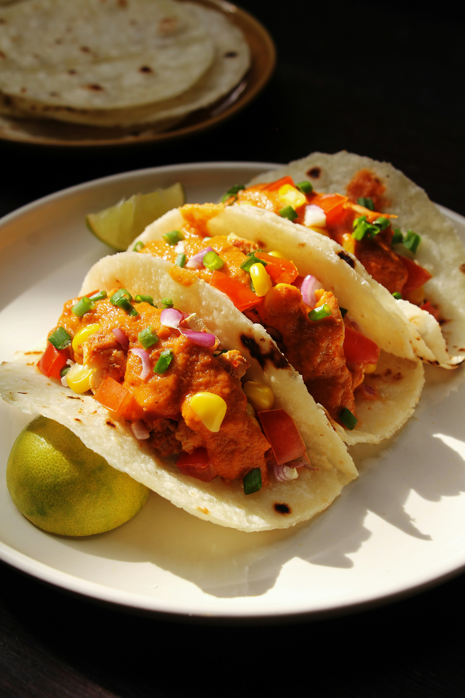

Chicken Tacos

Photo by
montatip lilitsanong
on
Unsplash
Fresh and Flavorful Mexican-Inspired Meal
Chicken tacos are made with seasoned chicken, fresh vegetables, and soft
tortillas.
They are easy to prepare and can be customized with your favorite
toppings.
Ingredients
- 300g chicken
- 6 small tortillas
- 1 tomato
- 1/2 onion
- 1/2 cup lettuce
- 1 teaspoon chili powder
- 1 teaspoon cumin
- 1 tablespoon cooking oil
- Salt to taste
Steps:
- Cut the chicken into small pieces.
- Season chicken with chili powder, cumin, and salt.
- Heat oil in a pan.
- Cook the chicken until fully done.
- Warm the tortillas.
- Add chicken and vegetables to each tortilla.
- Serve with your favorite toppings.